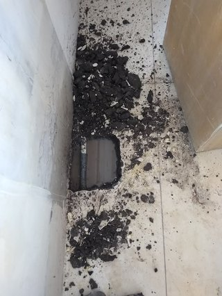

رطوبة وبقع على سقف الدور اللي تحت الخزان: هل التسريب من العزل؟
ترفع راسك في الغرفة اللي تحت الخزان وتلاحظ بقعة صفراء صغيرة في السقف، أو دهان بدأ يتقشر في زاوية معينة. في البداية تقول بسيطة، وبعد كم شهر تكبر البقعة، ويطلع معها ريحة رطوبة. هالموقف يتكرر في بيوت كثيرة في الرياض، وأول سؤال يجي: هل هذا تسريب سقف الدور تحت الخزان بالرياض؟ وهل السبب العزل؟
الجواب يحتاج معاينة، لأن تسريب سقف الدور تحت الخزان بالرياض له أسباب كثيرة غير العزل. لكن في هالدليل نساعدك تفهم العلامات، وتعرف الأسباب المحتملة، وتفرق بين إن المصدر الخزان أو شي ثاني، وتسوي فحوصات بسيطة وآمنة قبل ما تتصل بأحد، وتعرف متى تحتاج معاينة فنية وإعادة عزل.
💡 هالمقال إرشادي عام، وما يغني عن المعاينة الفعلية. لا تكسر السقف ولا تشيل طبقات بنفسك. ولو كانت الرطوبة قريبة من لمبات أو أفياش أو أسلاك، افصل الكهرباء عن المنطقة وتواصل مع فني كهرباء أول.
ليش ما تتجاهل تسريب سقف الدور تحت الخزان بالرياض؟
البقعة الصغيرة في السقف غالبًا تكون آخر شي يبان من مشكلة بدأت قبل فترة. الموية تمشي داخل الخرسانة واللياسة بهدوء، وما تطلع على السطح إلا لما تتشبع الطبقات اللي فوقها. فلما تشوف البقعة، يكون فيه رطوبة موجودة من قبل.
والتأجيل ممكن يزيد المشكلة: الدهان يتقشر، واللياسة تنتفخ وتطيح، والعفن يبدأ يطلع في الزوايا، وأحيانًا يتأثر حديد التسليح لو استمرت الرطوبة سنين. ولهالسبب تسريب سقف الدور تحت الخزان بالرياض موضوع يستاهل تتعامل معه بدري، حتى لو كانت البقعة صغيرة.
والخبر الطيب إن كثير من حالات تسريب سقف الدور تحت الخزان بالرياض تنحل لما ينعرف المصدر بدقة. والمشكلة تكبر لما يتعالج الشي الغلط، مثل إنك تدهن البقعة أو تعيد عزل السطح كله، والمصدر الأصلي في ماسورة صغيرة عند الخزان.
رطوبة وبقع على السقف تحت الخزان بالرياض: وش العلامات؟
الرطوبة تبان بأشكال مختلفة، وكل شكل ممكن يعطيك فكرة عن مصدرها. وهذي أكثر العلامات اللي يلاحظها الناس:
- بقع صفراء أو بنية على السقف، أحيانًا بحواف داكنة
- تقشر الدهان أو تكون فقاعات تحته
- انتفاخ في اللياسة أو الجبس
- نقاط سودا أو خضرا تدل على عفن
- نقاط موية تتجمع وتنقط أحيانًا
- ريحة رطوبة أو عفن في الغرفة
- تشققات خفيفة في الدهان حول البقعة
فرق الشكل حسب مصدر الموية
البقعة اللي لها حلقات متعددة، زي حلقات الشجرة، غالبًا تدل على تسريب متقطع: يبتل المكان وينشف ويرجع يبتل. وهذا ممكن يصير مع تسريب يرتبط بتعبئة الخزان أو بالأمطار. أما البقعة اللي تكبر بشكل ثابت ودايمًا رطبة، فممكن تدل على تسريب مستمر من ماسورة أو من حوض الخزان.
والنقاط اللي تتكون على السقف بدون بقعة واضحة، خصوصًا في الصيف، ممكن تكون تكثف من مكيف أو من ماسورة باردة. وهالفروق ما تعطيك جواب نهائي، لكنها تساعدك ترتب الاحتمالات قبل ما يجي الفني. وكل نوع من رطوبة وبقع على السقف تحت الخزان بالرياض يحتاج طريقة تعامل مختلفة.
الأسباب المحتملة: مو العزل بس
لما يشوف الناس رطوبة تحت الخزان، أول شي يفكرون فيه العزل. والعزل فعلًا سبب شائع، لكنه مو الوحيد. وهذي أهم الأسباب المحتملة:
تلف أو ضعف عزل الخزان نفسه
الخزان الخرساني على السطح أو في الدور الأعلى لازم يكون معزول من الداخل، عشان الموية ما توصل للخرسانة. ومع الوقت، العزل ممكن يتشقق أو يتقشر أو ينفصل عن الجدار، خصوصًا في الأرضية والزوايا. ولما يصير هالشي، تبدأ الموية ترشح في الخرسانة، وتنزل للسقف اللي تحت. وهذا من أشهر مشاكل عزل الخزانات بالرياض.
تشقق قاعدة الخزان أو حوضه
الخرسانة نفسها ممكن تتشقق بسبب الحرارة، أو حركة المبنى، أو ضغط الموية مع الوقت. والشق في القاعدة أو في الحوض اللي يحمل الخزان ممكن يسرب موية حتى لو كان العزل الداخلي سليم نسبيًا، وهنا يختلط الأمر مع مشاكل عزل الخزانات بالرياض. وفي الخزانات البلاستيكية أو الفايبر على السطح، الشق ممكن يكون في جسم الخزان نفسه.
تسريب من مواسير التعبئة أو التصريف أو الفائض
المواسير اللي تدخل الموية للخزان، أو تطلعها للبيت، أو تصرف الفائض، كلها نقاط ممكن تسرب، وأحيانًا يطلع سبب تسريب سقف الدور تحت الخزان بالرياض ماسورة بسيطة. وماسورة الفائض بالذات لو كانت مسدودة أو موجهة غلط، ممكن تصب الموية الزايدة على السطح نفسه بدل ما تصرفها بعيد.
تسريب من وصلات الخزان
الوصلات اللي تربط المواسير بجسم الخزان، مثل الجلب والمحابس، من أكثر الأماكن اللي تسرب مع الوقت. والحرارة والاهتزاز من المضخة يفكون الوصلات شوي شوي، والتسريب يبدأ نقطة نقطة، وما ينتبه له أحد لين يبان تسريب سقف الدور تحت الخزان بالرياض على شكل بقعة صغيرة.
رشح من عزل السطح العام أو تكثف أو مكيف
أحيانًا رطوبة وبقع على السقف تحت الخزان بالرياض ما لها علاقة بالخزان أصلًا. عزل السطح العام ممكن يكون متضرر، فتدخل موية المطر أو موية غسيل السطح. وأحيانًا تكون الرطوبة من تكثف حول مواسير باردة أو مجاري مكيف. ومكيفات الشباك والسبليت لها تصريف ممكن ينسد ويطلع موية في مكان غير متوقع.

مشاكل عزل الخزانات بالرياض: ليش تتكرر؟
الخزانات في الرياض تتعرض لظروف قاسية: حرارة عالية في الصيف، وفرق كبير بين حرارة النهار والليل، وشمس مباشرة على الخزانات اللي على السطح. وهالظروف تخلي الخرسانة تتمدد وتنكمش، ومع الوقت تتعب طبقة العزل وتتشقق.
ومن أكثر مشاكل عزل الخزانات بالرياض اللي نشوفها: عزل انطبق على سطح ما كان نظيف أو ناشف كفاية، فما التصق زين وانفصل بعد فترة. وعزل بطبقة رقيقة ما تكفي، أو بمادة ما تناسب خزانات موية الشرب. وعزل غطى الجدران ونسى الزوايا والوصلات اللي تكون أضعف نقطة.
ومن مشاكل عزل الخزانات بالرياض كذلك العزل القديم اللي انتهى عمره ولا أحد راجعه. وكل مادة لها عمر تقريبي يختلف حسب نوعها وظروف الخزان، والمراجعة الدورية تكشف التلف قبل ما يوصل للسقف.
كيف تفرّق بين إن المصدر الخزان أو شي ثاني؟
فيه ملاحظات بسيطة تقدر تسويها بنفسك، وتساعدك تعرف هل الرطوبة مرتبطة بالخزان:
موقع البقعة بالنسبة للخزان
لو البقعة تحت الخزان مباشرة، أو تحت مكان مواسيره، فاحتمال تسريب سقف الدور تحت الخزان بالرياض من الخزان نفسه يصير أقوى. ولو كانت بعيدة عنه، أو قريبة من حافة السطح أو من مكيف، فممكن يكون المصدر شي ثاني. وحاول تحدد مكان الخزان فوقك بالضبط، مثل إنك تقيس المسافة من جدار معين في السطح وفي الغرفة.
هل تزيد بعد تعبئة الخزان؟
لو لاحظت إن البقعة تبتل أكثر أو تكبر بعد ما يتعبى الخزان، أو بعد ما يشتغل الوايت، فهذا مؤشر قوي إن التسريب مرتبط بالخزان أو مواسير التعبئة. أما لو كانت تزيد بعد المطر بس، فالسطح العام أقرب.
هل البقعة ثابتة ولا متغيرة؟
لو البقعة رطبة طول الوقت، فالتسريب غالبًا مستمر. ولو كانت تنشف أيام وترجع تبتل في أيام معينة، فحاول تربط التغير بشي: تعبئة، مطر، تشغيل مكيف، غسيل السطح. وهالربط يقربك من المصدر.
العداد ومستوى الموية
لو كان عندك عداد موية، اقفل كل الحنفيات في البيت وراقب العداد فترة. لو كان يتحرك بدون استخدام، فممكن يكون فيه تسريب في مكان ما. ولو تقدر تشوف مستوى الموية في الخزان بأمان، علّم المستوى وراقبه وأنت مسكر التغذية والاستخدام. والهبوط بدون استخدام ممكن يدل على تسريب من الخزان نفسه.
وكل هالملاحظات تبني صورة، لكنها ما تغني عن فحص عزل الخزان من التسريب بالرياض على يد فني يشوف الخزان والمواسير والسطح على الطبيعة.
محتاج تنظيف احترافي؟
فريقنا يعاين الخزان والمواسير والسطح، ويحدد لك من وين جاية الرطوبة قبل أي إصلاح، عشان ما تصرف على حل غلط
فحوصات بسيطة وآمنة قبل المعاينة
قبل فحص عزل الخزان من التسريب بالرياض، تقدر تجهز معلومات تختصر على الفني وقت كثير:
- صوّر البقعة من نفس الزاوية كل كم يوم، وخل التاريخ ظاهر.
- علّم حدود البقعة بقلم رصاص خفيف، عشان تعرف هل تكبر.
- سجل متى تبتل أكثر: بعد التعبئة؟ بعد المطر؟ في الصيف؟
- راقب العداد ومستوى الخزان زي ما شرحنا فوق.
- لو تقدر تطلع السطح بأمان، شوف المواسير والوصلات حول الخزان من برا، وصوّر أي نقطة مبللة أو صدأ.
- شيك على ماسورة الفائض: وين تصب؟ هل فيها موية تنزل على السطح؟
ولا تطلع السطح لو كان بدون حماية جانبية أو في وقت حر شديد أو مطر.
وش ما تسويه بنفسك
فيه أشياء ممكن تبان حلول سريعة، لكنها تعقد المشكلة أو تكون خطرة:
- لا تكسر السقف أو تحفر فيه عشان تدور على المصدر
- لا تشيل طبقات العزل من الخزان أو السطح بنفسك
- لا تدهن البقعة قبل ما تعرف المصدر وتعالجه
- لا تحط مواد عزل عشوائية فوق الشقوق من برا
- لا تلمس أي شي كهربائي قريب من الرطوبة
- لا تنزل داخل الخزان
والدهان فوق رطوبة وبقع على السقف تحت الخزان بالرياض بالذات غلطة منتشرة. يخفي المشكلة فترة، والرطوبة تكمل شغلها تحته، وترجع البقعة أكبر. وفوق هذا تضيع عليك العلامات اللي كانت ممكن تساعد الفني يحدد المصدر.
فحص عزل الخزان من التسريب بالرياض: متى تحتاج معاينة فنية وإعادة عزل؟
لو البقعة تكبر، أو مرتبطة بتعبئة الخزان، أو فيه هبوط في مستوى الموية بدون استخدام، أو مر على عزل الخزان سنين بدون مراجعة، فهنا وقت فحص عزل الخزان من التسريب بالرياض بشكل احترافي. والمعاينة هي اللي تحدد هل المشكلة في العزل، أو في الخرسانة، أو في المواسير، أو في شي ثاني تمامًا.
والأفضل تتعامل مع شركة عزل خزانات بالرياض تقدر تفحص الخزان من الداخل والخارج، وتشوف حالة العزل والزوايا والوصلات، وتحدد إذا كان يحتاج ترميم جزئي أو إعادة عزل كامل. والفريق المتخصص يعرف الفرق بين رطوبة الخزان ورطوبة السطح، وما يقترح إعادة عزل لو المشكلة في وصلة بسيطة.
ولا تنتظر لين تصير البقعة كبيرة. كل ما كانت المعاينة أبدر، كل ما كان الإصلاح أبسط، وأقل تأثير على السقف اللي تحت.
كيف تتم المعاينة وإعادة العزل بشكل عام؟
الخطوات تختلف حسب حالة الخزان، لكن بشكل عام تمر بهالمراحل:
1. الفحص
في فحص عزل الخزان من التسريب بالرياض، الفني يشوف البقعة من تحت، والخزان والمواسير والسطح من فوق. ويسأل عن التاريخ: متى بدأت؟ متى تزيد؟ متى آخر عزل؟ وأحيانًا يفرغ الخزان عشان يشوفه من الداخل.
2. التحديد
بعد الفحص، يحدد المصدر الأقرب: عزل داخلي متضرر، أو شق في القاعدة، أو وصلة، أو ماسورة، أو سطح. وأحيانًا يكون فيه أكثر من مصدر مع بعض.
3. المعالجة
لو كانت المشكلة من مشاكل عزل الخزانات بالرياض، يتفرغ الخزان وينظف ويجفف، وتتجهز الأسطح، وبعدين ينطبق العزل الجديد بالمادة المناسبة، ويترك يجف الوقت اللازم قبل التعبئة. ولو كانت في ماسورة أو وصلة، تنصلح أو تتبدل. وأحيانًا تحتاج معالجة الشقوق قبل العزل.
4. المتابعة
بعد الإصلاح، رطوبة وبقع على السقف تحت الخزان بالرياض تحتاج وقت عشان تنشف. ولا تدهن السقف على طول، خله ينشف تمامًا، وراقب البقعة أسابيع. ولو ما رجعت تبتل، تقدر بعدها تعالج اللياسة والدهان.
نصايح الوقاية
- راجع عزل الخزان بشكل دوري، خصوصًا لو مر عليه سنين
- شيك على المواسير والوصلات حول الخزان كل كم شهر
- تأكد إن ماسورة الفائض تصرف بعيد عن السطح وعن الجدران
- نظف مصارف السطح قبل موسم الأمطار
- تأكد إن تصريف المكيفات ما ينسد ولا يصب على السطح قرب الخزان
- خل تنظيف الخزان فرصة لـفحص عزل الخزان من التسريب بالرياض من الداخل
الخزانات البلاستيكية والفايبر على السطح
مو كل البيوت فيها خزان خرساني على السطح. بيوت كثيرة تعتمد على خزانات بلاستيك أو فايبر جلاس فوق قاعدة خرسانية أو حديد. وهنا الخزان نفسه ما يحتاج عزل داخلي، لكن التسريب ممكن يجي من جسمه لو تشقق من الشمس، أو من الوصلات اللي تحته.
والموية اللي تسرب من خزان بلاستيك تنزل على القاعدة وعلى السطح، ولو كان عزل السطح تحت الخزان ضعيف، توصل للسقف. فهنا تسريب سقف الدور تحت الخزان بالرياض يكون نتيجة مشكلتين مع بعض: تسريب من الخزان، وعزل سطح ما يتحمل. وفي هالحالة، جزء من مشاكل عزل الخزانات بالرياض يكون في عزل السطح حول القاعدة، مو في الخزان نفسه.
الخزان الخرساني المدمج في السطح
في فلل كثيرة، الخزان العلوي جزء من البناء نفسه: حوض خرساني مدمج في السطح أو في الدور الأعلى، وسقفه أو أرضيته هي نفس سقف الغرفة اللي تحت. وهالتصميم يخلي أي ضعف في العزل الداخلي يوصل مباشرة للسقف.
وفي هالنوع من الخزانات، مشاكل عزل الخزانات بالرياض تكون أخطر، لأن ما فيه طبقة فاصلة بين الموية والسقف غير الخرسانة والعزل. ولهالسبب المراجعة الدورية للعزل من الداخل مهمة جدًا. ولو لاحظت تسريب سقف الدور تحت الخزان بالرياض في بيت فيه خزان مدمج، فالعزل الداخلي من أول الأشياء اللي تستاهل فحص. وكثير من مشاكل عزل الخزانات بالرياض في الخزانات المدمجة تبدأ من الزوايا ومن حول فتحات المواسير.
المكيفات والتكثف
في الصيف، المكيفات تشتغل طول اليوم، وتطلع موية تكثف لازم تتصرف. ولو كان تصريف مكيف الشباك أو وحدة السبليت الخارجية على السطح قريب من الخزان، أو مسدود، ممكن تتجمع الموية وترشح للسقف. وهنا تشوف رطوبة وبقع على السقف تحت الخزان بالرياض وتحسبها من الخزان، وهي ممكن تكون من المكيف.
وكذلك المواسير الباردة اللي تمر في السقف، خصوصًا مواسير الموية الباردة القريبة من مجاري التكييف، ممكن يتكون عليها تكثف ينقط. ولو كانت البقعة تزيد في الصيف بس، ومع تشغيل المكيف، فهذا احتمال يستاهل تذكره للفني. والتفريق هنا يوفر عليك إعادة عزل ما تحتاجها، لأن تسريب سقف الدور تحت الخزان بالرياض مو دايمًا من الخزان.
الأمطار وعزل السطح العام
الأمطار في الرياض مو كثيرة، لكنها لما تجي ممكن تكشف ضعف عزل السطح. ولو كانت البقعة تظهر أو تكبر بعد المطر بالذات، فالسطح العام أقرب سبب من الخزان. والموية تتجمع حول قاعدة الخزان أو في المصارف المسدودة، وتلقى طريقها من أي شق.
ولهالسبب لما تلاحظ رطوبة وبقع على السقف تحت الخزان بالرياض بعد المطر، شيك على مصارف السطح: هل هي نظيفة؟ هل الموية تتجمع حول الخزان؟ والسطح اللي ميوله غلط يخلي الموية تقعد عند قاعدة الخزان، فتختلط مشاكل عزل الخزانات بالرياض مع مشاكل عزل السطح. وهنا الفحص يشمل الاثنين: عزل الخزان، وعزل السطح حوله. ولو ما تحرك شي في البقعة بعد المطر، فاحتمال تسريب سقف الدور تحت الخزان بالرياض من السطح يقل.
البيوت القديمة
في البيوت القديمة، العزل غالبًا ما انراجع من سنين، والمواسير قديمة ووصلاتها متعبة. وهنا احتمال مشاكل عزل الخزانات بالرياض أكبر، لأن العزل انتهى عمره، أو كان منطبق بمواد ما تتحمل المدة الطويلة. وأحيانًا يكون العزل الأصلي بسيط، وانضافت فوقه ترقيعات على مر السنين.
لو بيتك قديم ولاحظت رطوبة، فالأفضل يكون فحص عزل الخزان من التسريب بالرياض شامل: الخزان من الداخل، والمواسير، والسطح. والمعالجة الجزئية في البيوت القديمة ممكن تحل نقطة وتطلع نقطة ثانية، فالنظرة الشاملة تفرق. وكثير من مشاكل عزل الخزانات بالرياض في البيوت القديمة تكون متراكمة من أكثر من مصدر.
هل ممكن يصير التسريب في فيلا جديدة؟
نعم، وأحيانًا في أول سنة. الخرسانة الجديدة تمر بفترة جفاف وانكماش، وممكن تطلع فيها شقوق صغيرة. ولو العزل انطبق على خرسانة ما جفت كفاية، أو بطبقة رقيقة، ممكن ينفصل بسرعة. وهذي من مشاكل عزل الخزانات بالرياض اللي تظهر في البيوت الجديدة.
لو لاحظت تسريب سقف الدور تحت الخزان بالرياض في فيلا استلمتها قريب، صوّر البقعة وتواصل مع المقاول أو المطور اللي سلمك البيت، وشوف إذا فيه ضمان على العزل. وبالتوازي، فحص عزل الخزان من التسريب بالرياض من جهة مستقلة يعطيك تقرير واضح تعتمد عليه في المتابعة.
الشقة تحت خزانات السطح في العمارة
لو كنت ساكن في الدور الأخير من عمارة، وفوقك خزانات علوية لكل الشقق، فالبقعة في سقفك ممكن تكون من خزان جارك مو خزانك. والتسريب هنا يحتاج تنسيق مع المالك أو مع الجيران، لأن الخزانات مو كلها لك.
صوّر البقعة، وحدد مكانها بالنسبة للخزانات فوق، وبلّغ المالك أو إدارة العمارة. واقترح إن فحص عزل الخزان من التسريب بالرياض يشمل كل الخزانات اللي فوق شقتك. ولحد ما يصير الفحص، راقب رطوبة وبقع على السقف تحت الخزان بالرياض وسجل التغيرات. وفي العمائر، المسؤولية عن تسريب سقف الدور تحت الخزان بالرياض ترجع للعقد والاتفاق بينك وبين المالك، فراجع عقدك.
العفن والريحة
الرطوبة المستمرة في السقف ممكن تصير بيئة مناسبة لنمو العفن، وتبان نقاط سودا أو خضرا في الزوايا، مع ريحة رطوبة في الغرفة. وهالشي مزعج، وممكن يضايق بعض الناس، خصوصًا اللي عندهم حساسية من الرطوبة.
لو لاحظت عفن مع رطوبة وبقع على السقف تحت الخزان بالرياض، هوّ الغرفة قدر الإمكان، وخل التعامل مع المصدر أولوية. وتنظيف العفن من السطح بدون علاج المصدر يرجعه بعد فترة. ولو فيه أحد في البيت يتضايق صحيًا، استشر الطبيب. والحل الدائم يبدأ بمعرفة سبب رطوبة وبقع على السقف تحت الخزان بالرياض.
التسريب وفاتورة الموية
التسريب المستمر من الخزان أو المواسير ما يأثر على السقف بس، ممكن يرفع استهلاك الموية بدون ما تنتبه. ولو لاحظت إن الوايت صار يجي أكثر من المعتاد، أو الفاتورة زادت بدون سبب واضح، فهذا مؤشر يستاهل تربطه بالبقعة.
وهنا تجربة العداد اللي شرحناها فوق مهمة. لو العداد يتحرك والحنفيات مسكرة، فـتسريب سقف الدور تحت الخزان بالرياض ممكن يكون جزء من تسريب أكبر. وهالمعلومة تفيد الفني وقت فحص عزل الخزان من التسريب بالرياض، لأنها تبين إن التسريب مستمر ومو مجرد رطوبة متقطعة.
الكهرباء والرطوبة
لو كانت البقعة قريبة من لمبة أو فياش أو مسار أسلاك في السقف، فهنا السلامة أول. الموية والكهرباء ما يجتمعون، والرطوبة ممكن تسبب تماس أو تلف في التمديدات.
افصل الكهرباء عن الغرفة من اللوحة لو لاحظت موية قريبة من التمديدات، وتواصل مع فني كهرباء يشيك عليها. ولا تلمس اللمبات أو الأفياش وهي مبللة. ولما تتكلم مع فريق فحص عزل الخزان من التسريب بالرياض، قل لهم إن فيه تمديدات قريبة من رطوبة وبقع على السقف تحت الخزان بالرياض، عشان يتعاملون بحذر.
بعد إعادة العزل: متى تدهن؟
بعد ما تنحل مشاكل عزل الخزانات بالرياض وتتعالج، كثير من الناس يستعجلون في دهان السقف. لكن الخرسانة واللياسة تحتاج وقت تنشف فيه، والوقت يختلف حسب كمية الرطوبة والجو. والدهان على سطح رطب يتقشر بسرعة، ويخليك تحسب إن التسريب رجع.
خل السقف ينشف، وراقب رطوبة وبقع على السقف تحت الخزان بالرياض أسابيع بعد الإصلاح. ولو ما رجعت تبتل، وتأكدت إن البقعة ثابتة وناشفة، تقدر تعالج اللياسة وتدهن. ولو رجعت تبتل، تواصل مع الفريق اللي سوى الإصلاح.
أخطاء شائعة مع الرطوبة تحت الخزان
أول غلطة إنك تفترض إن السبب العزل، وتعيد عزل الخزان كامل، والمشكلة في وصلة. والثانية إنك تعزل السطح من برا بمادة عشوائية وتسد الشقوق الظاهرة، والموية تلقى طريق ثاني. والثالثة إنك تدهن البقعة وتنساها.
والرابعة إنك تأجل فحص عزل الخزان من التسريب بالرياض لين تكبر البقعة وتتعب اللياسة. والخامسة إنك تختار أرخص عرض بدون ما تسأل عن المادة وطريقة التطبيق، وبعد فترة ترجع مشاكل عزل الخزانات بالرياض من جديد. وتجنب هالأخطاء يوفر عليك تعب تسريب سقف الدور تحت الخزان بالرياض المتكرر.
وش تسأل الفني وقت المعاينة؟
- وش المصدر الأقرب حسب الفحص؟ وكيف تأكدت منه؟
- هل المشكلة في العزل الداخلي، أو الخرسانة، أو المواسير؟
- هل يحتاج إعادة عزل كامل ولا ترميم جزئي؟
- وش المادة المستخدمة، وهل هي مناسبة لخزانات موية الشرب؟
- كم يحتاج العزل وقت جفاف قبل التعبئة؟
- هل فيه ضمان على الشغل؟
والفني اللي يجاوب بوضوح، ويشرح لك نتيجة فحص عزل الخزان من التسريب بالرياض بالصور، غالبًا يعرف شغله. أما اللي يقترح إعادة عزل كامل بدون ما يشوف الخزان من الداخل، فاسأل أكثر قبل ما توافق. وكل مشاكل عزل الخزانات بالرياض لها حل مناسب، بس بعد ما ينعرف المصدر.
علاقة تنظيف الخزان بفحص العزل
تنظيف الخزان فرصة مناسبة لفحص العزل من الداخل، لأن الخزان يكون فاضي ونظيف، وتبان فيه أي تشققات أو تقشر. وكثير من مشاكل عزل الخزانات بالرياض تنكشف وقت التنظيف قبل ما توصل للسقف.
لو كنت تنظف الخزان بشكل دوري، اطلب من الفريق يصور العزل من الداخل ويعطيك رأيه في حالته. وبهالطريقة يصير فحص عزل الخزان من التسريب بالرياض جزء من الصيانة العادية، وتكتشف المشكلة قبل ما يصير تسريب سقف الدور تحت الخزان بالرياض وتحتاج إصلاح السقف بعد.
الحرارة في الصيف وتأثيرها
صيف الرياض الحار يأثر على كل شي فوق السطح. الخرسانة تسخن في النهار وتبرد في الليل، والعزل يتمدد وينكمش معها. ومع السنين، هالحركة اليومية تتعب العزل وتفتح شقوق صغيرة.
ولهالسبب بعض الناس يلاحظون إن البقعة تظهر أو تكبر في الصيف أكثر. والحماية من الشمس، مثل مظلة فوق الخزانات أو عزل حراري للسطح، تقلل الإجهاد على العزل. وهالخطوات تقلل مشاكل عزل الخزانات بالرياض على المدى الطويل، وتأخر ظهور تسريب سقف الدور تحت الخزان بالرياض.
أسقف الجبس والأسقف المستعارة
في بيوت كثيرة، تحت السقف الخرساني فيه سقف جبس أو سقف مستعار. وهالسقف يخفي الرطوبة فترة، لأن الموية تتجمع فوقه قبل ما تبان. ولما تبان أخيرًا، تكون على شكل بقعة في الجبس أو تهدل في ألواحه، وأحيانًا تكون المشكلة أكبر من اللي تشوفه.
لو عندك سقف جبس وبدأت تشوف رطوبة وبقع على السقف تحت الخزان بالرياض، لا تتجاهلها لأن الجبس يتأثر بالموية بسرعة، وممكن يضعف ويطيح جزء منه. وخل الفني يشوف فوق الجبس لو فيه فتحة صيانة، بدل ما تكسر شي بنفسك. وهنا فتحات الصيانة تفيد كثير، لأنها تسمح بالفحص بدون تكسير.
كيف تختار الوقت المناسب للمعاينة؟
أفضل وقت للمعاينة لما تكون البقعة رطبة أو في فترة نشاطها، لأن الفني يقدر يشوف المصدر وهو شغال. ولو كانت البقعة تبتل بعد تعبئة الخزان، اطلب إن المعاينة تكون بعد التعبئة بفترة قصيرة.
ولو كانت تبتل بعد المطر بس، فالأنسب يكون الفحص بعد أول مطر. وفي الحالتين، الصور اللي جمعتها في الفترات اللي قبل تعطي الفني صورة كاملة، حتى لو كانت البقعة ناشفة وقت الزيارة. وهالتنسيق يخلي فحص عزل الخزان من التسريب بالرياض أدق، ويقلل احتمال الحكم الغلط.
ترميم السقف بعد علاج المصدر
بعد ما يتعالج المصدر وينشف السقف، يجي دور الترميم. اللياسة المنتفخة تحتاج تتشال وتنعاد، والأماكن اللي فيها عفن تحتاج تنظيف ومعالجة قبل الدهان. والدهان نفسه يفضل يكون من نوع مناسب للأماكن اللي تعرضت لرطوبة.
وهالشغل يكون آخر خطوة، مو أول خطوة. وكثير من الناس يبدأون بالترميم لأنه اللي يبان، وبعد أشهر يرجع كل شي. فخل الترتيب واضح: مصدر، ثم جفاف، ثم ترميم. وبكذا ما تتكرر رطوبة وبقع على السقف تحت الخزان بالرياض بعد ما صرفت على الدهان.
الضمان على العزل
لما تعيد عزل الخزان، اسأل عن الضمان: كم مدته؟ وش يشمل؟ وهل يشمل التسريب للسقف لو صار بسبب العزل؟ والضمان المكتوب يعطيك راحة بال، ويخلي الشركة ملتزمة بجودة الشغل.
واحتفظ بصور الخزان قبل وبعد العزل، وبتاريخ الشغل. ولو ظهرت رطوبة خلال فترة الضمان، تقدر ترجع للشركة بمعلومات واضحة. وهالتوثيق يفيدك بعد لو بعت البيت أو أجرته، لأنه يبين إن الخزان انعزل في تاريخ معين.
لو كان البيت مؤجر
لو كنت مستأجر ولاحظت رطوبة في السقف تحت الخزان، صوّرها وبلّغ المالك بأسرع وقت، بأسلوب هادي وواضح. والإصلاح غالبًا يرجع للمالك حسب العقد والاتفاق، فراجع عقدك. ولا تحاول تصلح شي بنفسك بدون موافقته.
ولو كنت المالك وبلغك المستأجر، تعامل مع البلاغ بجدية، لأن تسريب سقف الدور تحت الخزان بالرياض لو انترك ممكن يأثر على البيت نفسه. ورتب معاينة سريعة، وشارك المستأجر بالنتيجة والخطة.
الفرق بين الرطوبة الصاعدة والنازلة
مو كل رطوبة في الجدران نازلة من فوق. فيه رطوبة صاعدة من الأرض، تبان في أسفل الجدران قريب من البلاط، وما لها علاقة بالخزان العلوي. وفيه رطوبة جانبية من مواسير داخل الجدار.
ولو كانت البقعة في السقف أو أعلى الجدار تحت الخزان، فهي غالبًا نازلة. أما لو كانت في أسفل الجدار، فالمصدر غالبًا مختلف. وهالتفريق البسيط يساعدك تعرف هل تتكلم مع فريق خزانات، أو فني سباكة، أو مختص عزل أرضيات. ومو كل رطوبة تعني مشاكل عزل الخزانات بالرياض، لكن كل رطوبة تحت الخزان تستاهل فحص.
متابعة البقعة بالتطبيقات والملاحظات
طريقة بسيطة تساعدك كثير: خصص ألبوم في جوالك لصور البقعة، وصوّرها كل أسبوع من نفس المكان ونفس الإضاءة. واكتب مع كل صورة ملاحظة قصيرة: هل تعبى الخزان؟ هل كان فيه مطر؟ هل كان المكيف شغال؟
وبعد شهر، تقدر تشوف بعينك هل البقعة تكبر، أو ثابتة، أو تتغير مع شي معين. وهالمعلومات تختصر على الفني وقت كثير، وتخلي تشخيص تسريب سقف الدور تحت الخزان بالرياض أوضح من الكلام العام. ولما ترتبط رطوبة وبقع على السقف تحت الخزان بالرياض بحدث محدد في الصور، يصير تحديد المصدر أسهل بكثير.
العوامة والفائض المستمر
لو كانت عوامة الخزان معطلة، الخزان يستمر يتعبى بعد ما يمتلي، والموية الزايدة تطلع من ماسورة الفائض بشكل مستمر. ولو كانت الفائض تصب على السطح أو قريب من الجدار، تصير الموية حاضرة طول الوقت حول الخزان، وتلقى طريقها لأي شق.
علامة هالمشكلة إنك تسمع صوت موية تجري في السطح باستمرار، أو تشوف بقعة مبللة دايمًا عند طرف الفائض. والحل غالبًا بسيط: تصليح العوامة أو تبديلها، وتوجيه الفائض لمصرف مناسب. وهالشي يقدر الفني يشيك عليه في نفس المعاينة.
المضخة واهتزازها
المضخة اللي تعبي الخزان العلوي تشتغل وتطفي عشرات المرات في اليوم، وكل مرة فيها اهتزاز بسيط ينتقل للمواسير والوصلات القريبة. ومع السنين، هالاهتزاز يفك الوصلات شوي شوي، خصوصًا لو كانت المضخة مثبتة على السطح قريب من الخزان بدون قاعدة مناسبة.
لو كانت البقعة تحت مكان المضخة أو مواسيرها، اذكر هالشي للفني. وتثبيت المضخة على قاعدة تمتص الاهتزاز، وفحص وصلاتها بشكل دوري، يقلل احتمال التسريب من هالمنطقة.
حديد التسليح وصدأه
الرطوبة لو استمرت سنين في الخرسانة، ممكن توصل لحديد التسليح وتبدأ تصديه. ومن العلامات اللي تخلي الموضوع يحتاج اهتمام عاجل: خطوط صدأ بنية على السقف، أو تشقق في الخرسانة على امتداد خط مستقيم، أو تساقط قطع من اللياسة.
لو لاحظت شي من هالعلامات، فهنا الموضوع ما يخص العزل بس، ويحتاج تقييم من مهندس أو مختص إنشائي يشوف حالة السقف. ولا تحاول تعالج الصدأ أو تشيل الخرسانة المتضررة بنفسك.
كيف تتكلم مع الفني عن البقعة؟
لما يجيك الفني، اعطه القصة كاملة بترتيب واضح: متى لاحظت البقعة أول مرة، وكيف تغيرت، ومتى تبتل أكثر، ووش لاحظت فوق في السطح. وورّه الصور اللي جمعتها بالترتيب الزمني.
وقل له لو صار أي تغيير في السطح أو الخزان قبل ظهور البقعة: تركيب مكيف جديد، أو تغيير مواسير، أو عزل سطح، أو صيانة للخزان. وأحيانًا يكون التغيير هذا هو المفتاح، لأن أي شغل جديد فوق ممكن يكون فتح مكان للموية بدون ما ينتبه أحد.
الغرف اللي تحت الخزان مباشرة
في كثير من الفلل، الغرفة اللي تحت الخزان العلوي تكون حمام أو مطبخ أو غرفة خدمات، لأن المصممين يقربون الخزان من أماكن الاستخدام. وهالغرف أصلًا فيها رطوبة من الاستخدام اليومي، فيصير صعب تفرق بين رطوبة الاستخدام ورطوبة التسريب.
والفرق هنا إن رطوبة الاستخدام تكون غالبًا موزعة وتخف مع التهوية، أما رطوبة التسريب فتكون في بقعة محددة وتستمر حتى لو الغرفة ما استخدمت. ولو عندك شفاط في الحمام، شغله وراقب: هل البقعة تنشف ولا تبقى مثل ما هي؟
وش يصير لو تأخرت في المعالجة؟
التأخير ما يوقف الرطوبة، بس يخليها تنتشر بهدوء. البقعة اللي كانت بحجم الكف ممكن تتوسع مع الوقت، والدهان يتقشر في مساحة أكبر، واللياسة تضعف وتحتاج تتشال وتنعاد بدل ما كانت تحتاج دهان بس. وفي الحالات اللي تطول سنين، ممكن يتأثر الأثاث تحت البقعة، أو السقف المستعار، أو التمديدات الكهربائية.
وفي المقابل، المعالجة المبكرة غالبًا تكون أبسط: مصدر واضح، وإصلاح محدد، وترميم صغير. ولهالسبب ننصح دايم إنك تتعامل مع أول بقعة تشوفها، حتى لو كانت صغيرة وما تزعجك الحين.
الأثاث والأغراض تحت البقعة
لو تحت البقعة سرير أو كنب أو دولاب، بعّده عن المكان لحد ما ينعرف المصدر وينحل. والموية اللي تنقط أو الرطوبة المستمرة ممكن تخرب الخشب والقماش، وتسبب ريحة وعفن في الأثاث نفسه. ولو كانت البقعة فوق سجاد أو موكيت، ارفعه أو حط تحت مكان التنقيط شي يحميه.
وفي الغرف اللي فيها أجهزة كهربائية، مثل تلفزيون أو كمبيوتر، بعدها عن مكان الرطوبة. والخطوات هذي مؤقتة، لكنها تحمي أغراضك لحد ما يخلص الإصلاح. وصوّر أي ضرر لاحظته في الأثاث، لأنه ممكن تحتاجه لو كان فيه ضمان أو اتفاق مع المالك أو المقاول.
غسيل السطح وأثره على الرطوبة
بعض الناس يغسلون السطح بالموية بشكل دوري عشان يشيلون الغبار، خصوصًا بعد العواصف. وهالشي يبان مفيد، لكن لو كان عزل السطح ضعيف أو المصارف مسدودة، الموية تقعد على السطح وتلقى طريقها للسقف، خصوصًا حول قاعدة الخزان.
لو تغسل السطح، تأكد إن الموية تمشي للمصارف مباشرة وما تتجمع عند الخزان. وراقب البقعة بعد الغسيل: لو تبتل بعده، فهذي معلومة مهمة للفني. وأحيانًا الكنس أو الشفط يكون بديل أنسب من الغسيل بكميات كبيرة من الموية.
ونفس الشي ينطبق على غسيل خزانات السطح من برا أو غسيل المكيفات. أي كمية موية كبيرة تنسكب على السطح لازم يكون لها طريق واضح للتصريف، بعيد عن الخزان والجدران. ولو لاحظت إن البقعة تزيد بعد أي شغل فيه موية فوق، خل هالملاحظة ضمن السجل اللي تعرضه على الفني.
نصيحة من فريق نقاء
من معايناتنا في بيوت الرياض، كثير من حالات الرطوبة تحت الخزان كان سببها شي صغير: وصلة تسرب، أو فائض يصب في المكان الغلط، أو زاوية ما انعزلت زين، وهذي من مشاكل عزل الخزانات بالرياض الشائعة. وفي حالات ثانية كان العزل كله منتهي ويحتاج إعادة. والفرق بين الحالتين ما يبان إلا بالمعاينة.
لا تدهن البقعة، ولا تكسر شي، وصوّرها وراقبها، واطلب معاينة. وبكذا تصرف على الحل الصحيح من أول مرة.
خلاصة سريعة
الرطوبة تحت الخزان لها أسباب كثيرة: عزل متضرر، أو شق في القاعدة، أو مواسير ووصلات، أو سطح أو مكيف. وتقدر تقرب من المصدر بملاحظة موقع البقعة وعلاقتها بالتعبئة والمطر ومراقبة العداد. ولا تكسر ولا تدهن قبل المعاينة، واطلب فحص فني يحدد المصدر قبل أي إصلاح.
أسئلة شائعة عن الرطوبة تحت الخزان
الخاتمة
بقعة الرطوبة تحت الخزان علامة تستاهل انتباهك، لكنها ما تعني دايمًا إن العزل هو السبب. وفي بيوت الرياض، الحرارة والشمس والسنين تتعب العزل والمواسير والوصلات، وكل واحد منهم ممكن يكون المصدر. والمعاينة هي اللي تحدد الطريق.
وفريق مؤسسة نقاء يخدم كل أحياء الرياض في معاينة الخزانات وتنظيفها وفحص عزلها، ويساعدك تعرف مصدر الرطوبة قبل أي إصلاح.
✨ معاينة الخزان وتحديد مصدر الرطوبة
ابعت لنا صور البقعة ومكان الخزان، ونرتب معك موعد معاينة
احجز الآن مع نقاء للتنظيف
تواصل معنا واحجز معاينة للخزان، ونحدد لك مصدر الرطوبة قبل أي إصلاح
- معاينة الخزان والعزل من الداخل والخارج
- فحص المواسير والوصلات وماسورة الفائض
- صور توضح حالة الخزان ومصدر الرطوبة
- تنظيف وعزل الخزانات في كل أحياء الرياض